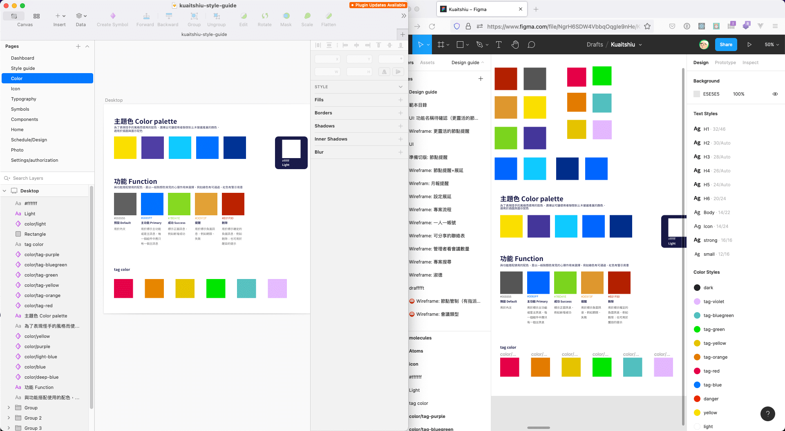

設計工具大遷移
我 2020 年 10 月才第一次用 Figma。
現在偶爾用 Sketch 開檔案時，已經陌生到覺得恍如隔世。
我覺得個人習慣是最關鍵的因素，不管哪個軟體，使用時間累積了越長就越難離開。
例如 Infinity 的 Photo 跟 Designer，我已經試用兩年了仍然不習慣。Adobe 系列從 15 歲就開始用，不管每隔幾年沒用都還是能對 Photoshop 跟 Illustrator 馬上上手，肌肉記憶真的很難打破。
所以我用 Sketch 的時間可能還不夠久？
Figma 的 autolyaout 功能跟 Component 跟其中的 Variants 功能，試用幾個禮拜就回不去 Sketch。
讓我很驚訝的是，在 Figma 之前我是多麽讚嘆 Sketch，而我也是多麽的被受限，不曾幻想過 Figma 這樣子的工具。或許幾年後又會有超乎我想像的設計工具或方式出現，希望到時候已經不會那麼大驚小怪。
不過，之前的設計檔怎麼辦？
例如我在設計應用伯的過程歷經了 Affinity Designer、Adobe XD、Sketch 最後在 Figma 落地生根，同一個 app 都散落在各個工具中，維護起來是滿災難的 🤣
因為我的情況是設計規模還算小，所以每換一次工具就摸摸鼻子重新準備 design token。
很好奇其他大型設計團隊要怎麼轉換工具？